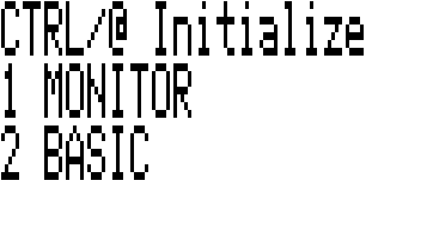

Epson HX-20 Emulator Improved Sound
Although I added support for the piezo speaker some time ago in an earlier version, it did not sound very nice, especially if trying to play back any music. The challenge is to try and feed the audio callback at an exact rate, but this has now been solved by letting the audio callback itself control the speed of the entire emulator. From now on, if piezo audio support is compiled in, the SDL callback will control the speed instead of the other alarm/pause concept. Re-sampling the audio from 612900 Hz to 44100 Hz is easy with the SDL_AudioStream functionality.
Another small feature is the possibility to display reverse video for the pixels instead of '#' and '%' characters, if the "-m 4" argument is used. This makes graphics look better in some cases, as long as the terminal can handle it properly.

These changes are incorporated in version 0.7 and can be downloaded here or from the GitHub, GitLab or Codeberg repositories.